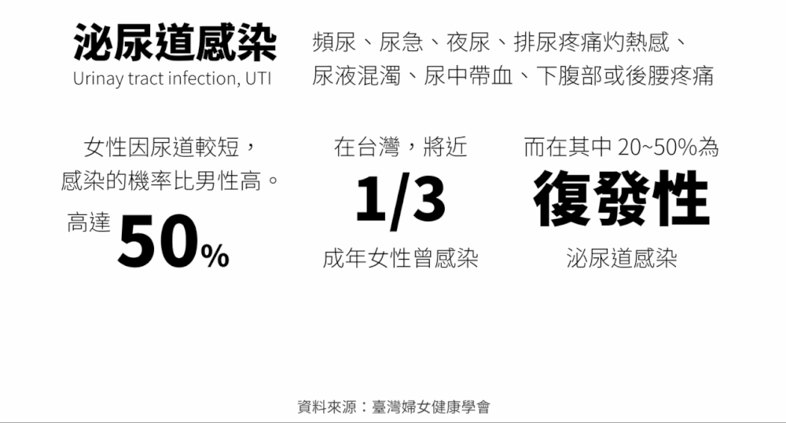

很多人要做簡報的第一步，就是打開簡報，把所有能找到的資料貼上去，然後開始排版。但事實上，這樣做並不會增快做簡報的速度，也難以提升簡報的品質。
不同的場景，不同的受眾，簡報也會有不同的呈現方式。有些時候適合先講結論，有些時候卻適合先做鋪成，不同知識背景的受眾，能夠理解的東西也不盡相同。
首先，分析簡報的場景以及受眾，包括時間限制，受眾期望的內容與你傳達的內容如果有所出入，該怎麼平衡。
假設，這是一個向主管群報告專案成效的簡報，可能這份簡報就該在數據表現方面多講一些，並對成效不好的原因跟改善方式有所準備，而不會在事前準備的故事上著墨太多。
做完前面的準備後，才開始準備簡報，而提升簡報美貌及設計感的方法無外乎下面幾點：
大部分企業都有自己的配色規範，可能是參照logo或熱賣商品，就像臉書，你不會哪天發現他的menu整欄變成黃色，或是spotify整個背景變成紫色。當然，若是毫無頭緒，也可以直接google顏色搭配，讓它直接幫你配好一套顏色。
看似基本的分割區域，但卻可以幫助受眾更快的理解內容。在許多例子中，我認為最經典的莫過於簡報小聚製作的GIF，範例如下：
很多人以為，簡報的對齊只能依照系統的判斷自動對齊。事實上，PPT跟Google簡報都有類似Photoshop的網格系統，可以幫助你比系統自動對齊更準確地對齊文字及圖片。
不是只有重點文字才需要加粗放大，粗細有別的文字也可以提升閱讀的順暢性。
這個道理其實很多人都知道，但現實卻是骨感的。在企業製作的簡報中，如果是對內的簡報，通常需要將所有資訊寫上去以便參考。這時可善用簡報下面的演講者備忘搞，或是導流至外部Google Doc，抑或是在簡報內將傳達概念跟紀錄文字的頁面分開，都可以避免混入過多的資訊，讓原本的簡報難以閱讀。